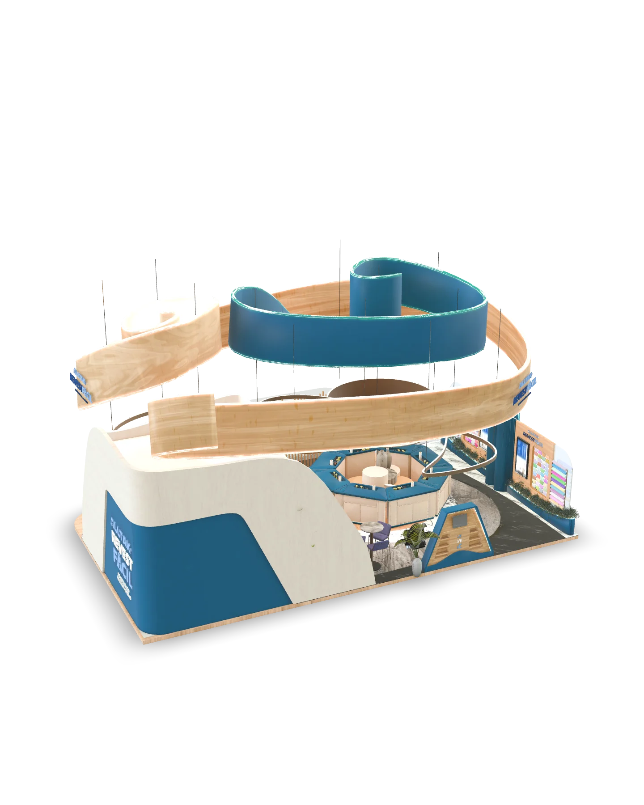
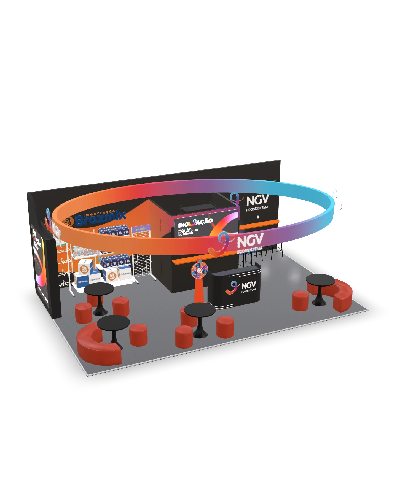
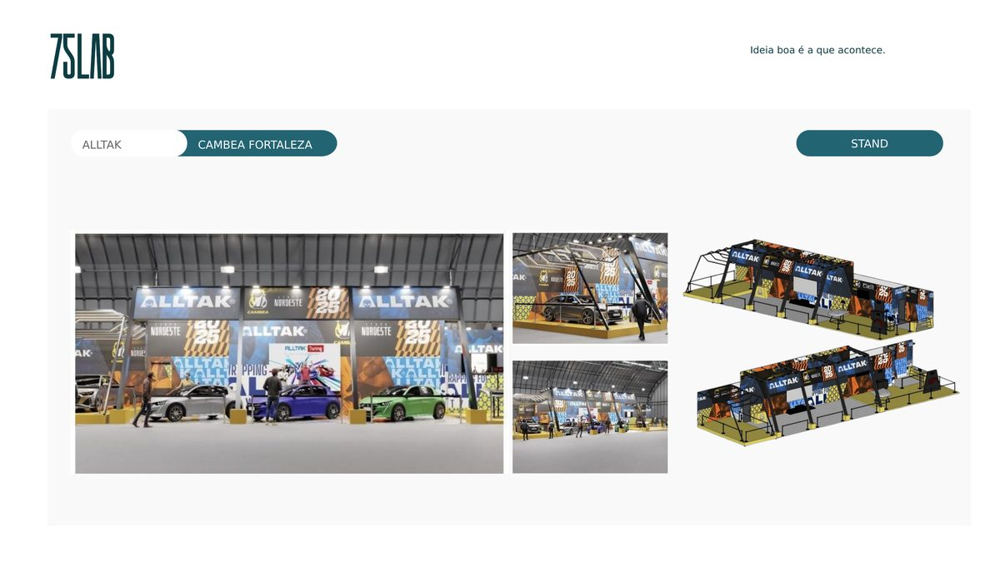
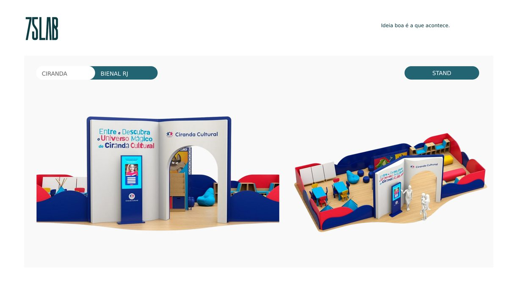
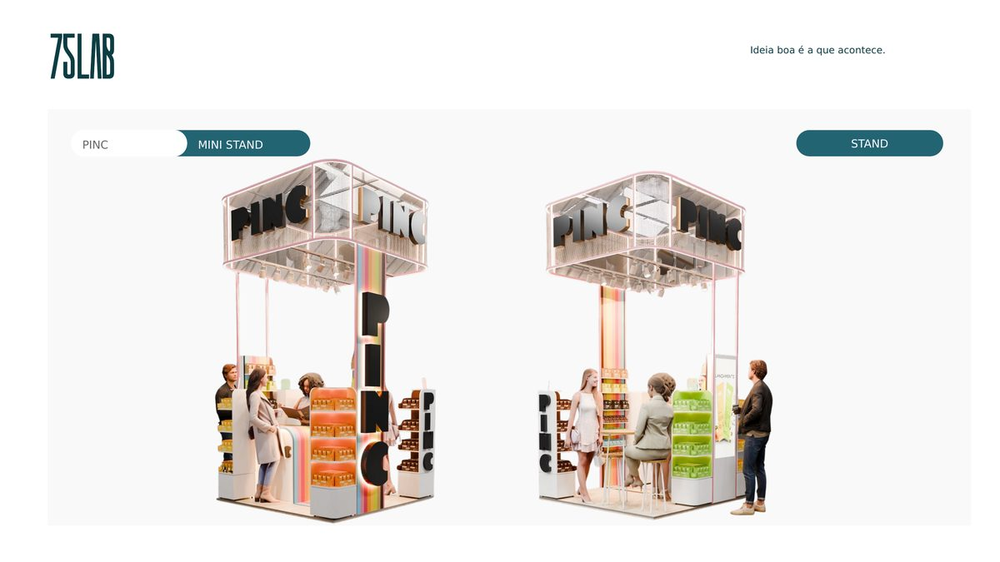

A 75 LAB projeta e produz estandes para feiras e eventos B2B e leva o projeto para realidade aumentada antes da construção. Pelo celular, o estande aparece em escala no chão; no modo imersivo, a equipe anda por dentro dele, compara versões e aprova sem depender de render estático.
O que entregamos
- Layout de circulação, áreas de reunião, produto e captação de leads.
- Comunicação visual e acabamentos calibrados para o objetivo na feira.
- Estande em realidade aumentada e em modo imersivo para aprovação.
- Produção, montagem e desmontagem com parceiros homologados.
Comparar versões andando dentro delas
No estande Revest Fácil da Alltak, de 12 × 7 metros, duas revisões do projeto ficaram lado a lado na mesma página de AR, com e sem testeira. A equipe comparou as versões no celular e escolheu a testeira vendo o estande em escala. Veja o case completo.
Estandes que já saíram daqui






Perguntas frequentes
O que é o modo imersivo do estande?
É o estande em 3D em tela cheia no celular ou no computador, sem a câmera. Você olha ao redor movendo o aparelho e anda com um joystick na tela, como se estivesse dentro do estande.
Preciso instalar algum aplicativo para ver o estande em AR?
Não. O link abre no navegador do iPhone e do Android. No computador, o estande aparece em 3D com um QR para abrir no celular.
A 75 LAB também cuida da montagem na feira?
Sim, com parceiros homologados de montagem e um responsável único da 75 LAB do projeto à desmontagem.